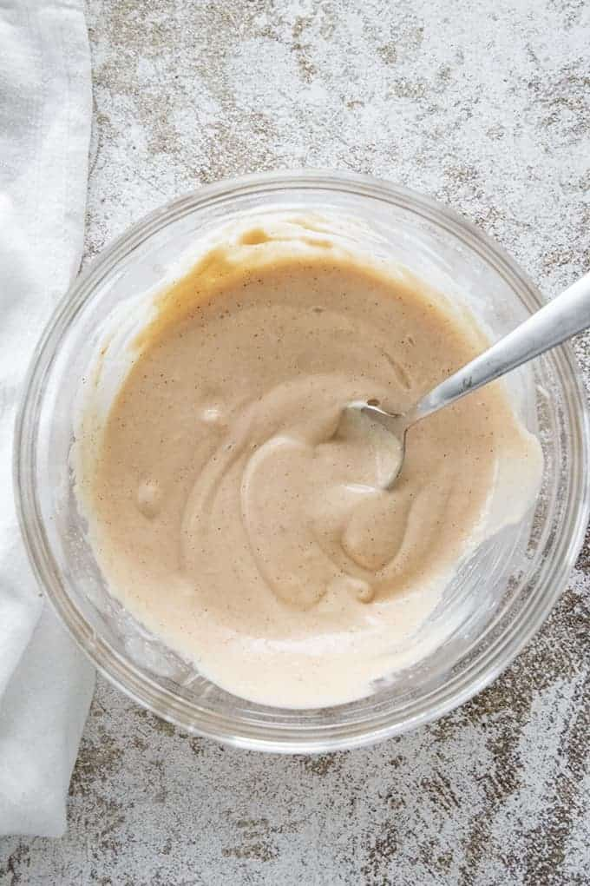

Home
Keto Yum Yum Sauce

Description
Yum Yum sauce is a wonderful compliment to many Asisn
inspired dishes, such as
Egg Roll in a Bowl. This sauce
is a classic version of a Japanese steakhouse sauce. Mostly
comprised of ketchup and mayo, with some additional spices
added.
Ingredients
- 1 cup Mayo
- 2 tbsp ketchup
- 1 tbsp+ 1 tsp powered sweetener
- 1 tbsp rice vinegar
- 1 tbsp salted butter, melted
- 2 tsp sriracha, optional
- 1 1/2 tsp garlic powder
- 1/2 tsp onion powder
- 1/2 tsp paprika
- water
Steps
- Combine all ingredients (minus the water)
in to a bowl and mix until well incorporated.Add
a teaspoon at a time until it has reach you desired
consistency.